选址、开荒和安家
1954年选定总场场址，翌年开始大规模开荒。机器驶入田间的同时，住处、道路和作业站也在一点点建起来。帐篷、临时住处和施工场景，记录了建场时的生活。
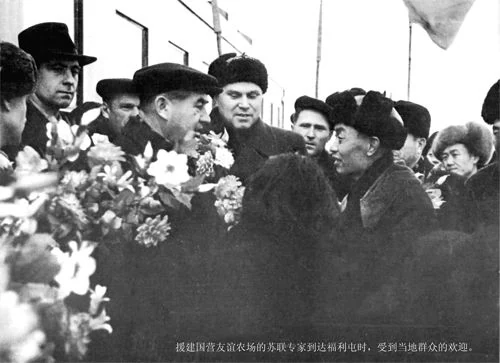
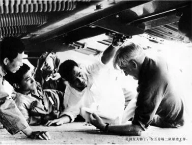
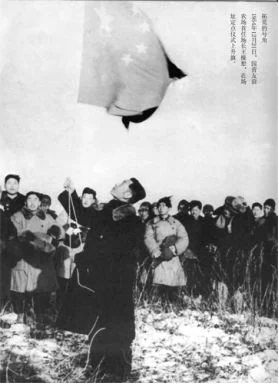

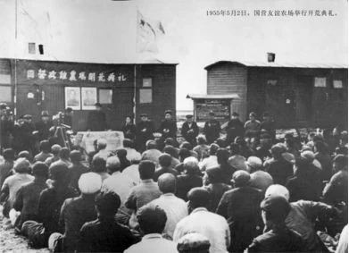
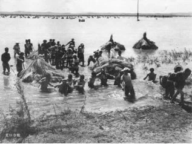

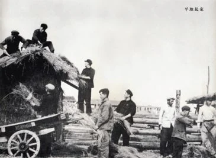
农机旁的面孔
农场早期既要培养会操作成套机械的机手，也要积累维修和组织作业的经验。郝焕文、刘瑛等人的影像，留下了那一代机手工作的场景。
总场部、俱乐部与日常生活
亲历者回忆，苏联专家参与规划总场部和各分场。场部建设与开垦同时展开，早期就设有职工俱乐部和学校，满足工作之外的阅读、娱乐和教育需要。老照片还留下了广场集会、孩子出游和八分场煤矿的不同侧面。


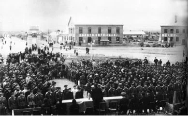
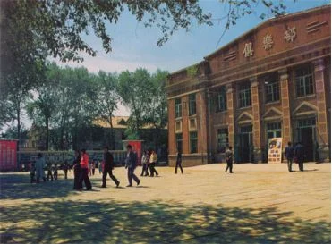
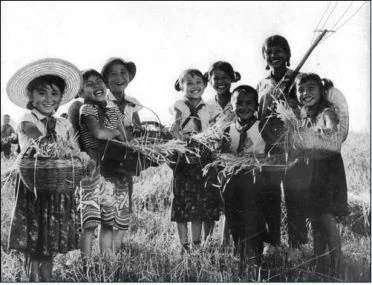
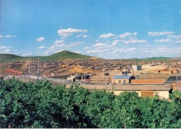
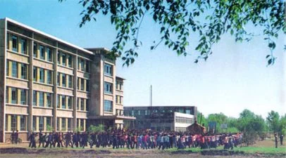
五分场二队进入报道
1978年的报道记录了五分场二队怎样把引进的成套机械用到大豆、玉米生产上。1983年8月邓小平到友谊农场五分场考察，观看农机作业并询问种植技术。
从团部、总场到今天的友谊镇
有些老居民习惯把县城叫作「团部」或「总场」。老街、集会和航拍记录了城镇面貌，西瓜田和白酒包装则留下了农场生产的旧影。

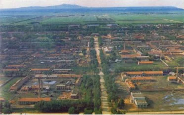
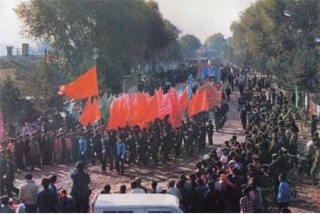
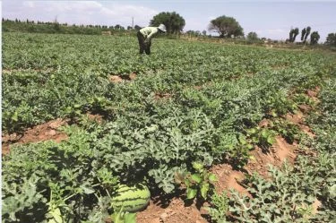
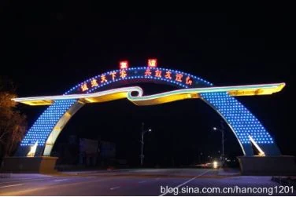
图片与文字来源
老照片由家乡风物志整理，原图来自友谊县网站。